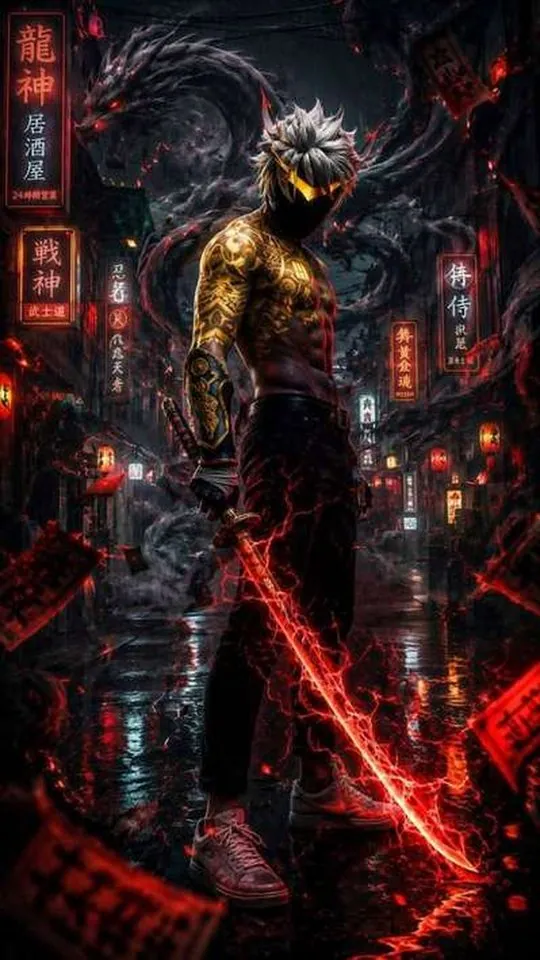
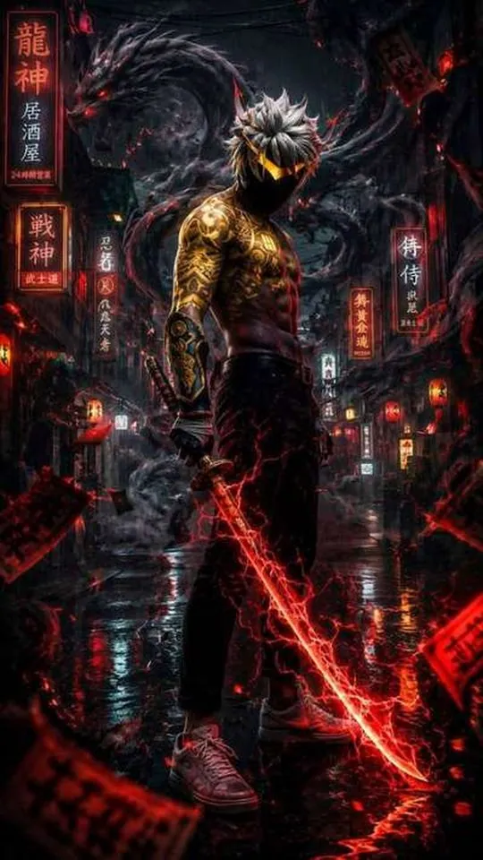
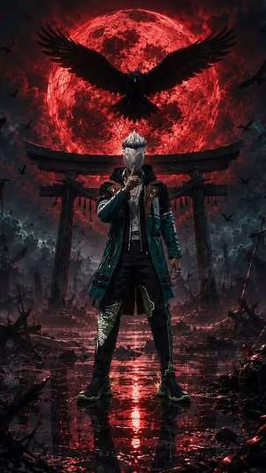
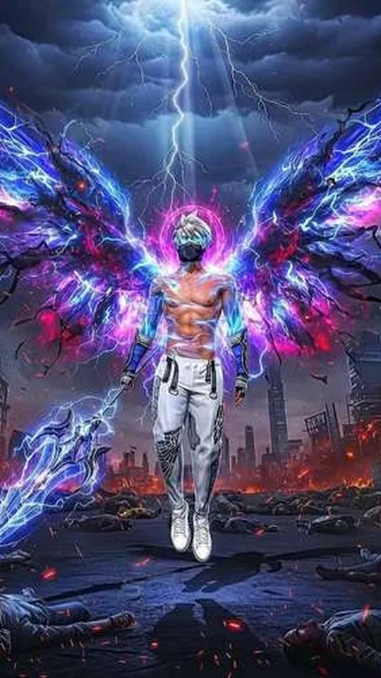

Free Fire Wallpapers: Characters, Skins and What Actually Looks Good

A good Free Fire wallpaper is not simply a screenshot of your favourite character standing in the lobby. This guide looks at which Free Fire characters and elite bundles actually hold up as phone wallpapers, why so many in-game captures end up looking cluttered, and how to get a cleaner result without any editing skills. If you have ever set a game screenshot as your lock screen and been disappointed an hour later, the reasons are worth understanding.
Why in-game screenshots rarely work as wallpapers
A battle royale screen is designed to be read at a glance during a fight, not to be admired as art. That single design goal is what ruins most Free Fire screenshots. The frame is packed with the minimap, the joystick, the fire button, the health bar, the ammo counter, teammate markers, damage numbers and kill notifications. Even when you stop moving and take a clean capture, the game keeps drawing the safe-zone circle and the compass across the top of the screen.
There is a second, less obvious problem: shape. Free Fire runs in landscape, roughly sixteen units wide for every nine tall. A modern phone wallpaper is portrait, closer to nine units wide for every nineteen tall. To fit a landscape capture on a portrait screen you either crop away most of the image or leave black bars. Cropping throws away pixels, and on a high-resolution phone the remaining section looks soft. A character who filled the middle of the frame now fills a narrow vertical strip.
Colour matters too. Free Fire leans on warm, saturated lighting, so a capture taken in a shaded building or at dusk can look muddy once it sits behind your clock and notifications. Busy, high-contrast backgrounds pull attention away from the character you actually wanted to show.

Free Fire characters that translate well to a wallpaper
The characters that read best on a lock screen share a few traits: a clear silhouette, a strong single colour, and a pose that is easy to understand at a small size. Characters with complicated gear and thin outlines tend to turn into noise when they are shrunk down.
- Alok is the classic choice. His DJ styling, headphones and bright palette produce a simple, recognisable shape that still looks sharp when the image is small.
- Chrono works because his ability visual, a glowing shield, gives a wallpaper an obvious focal point and a sci-fi feel.
- Kelly and other fast, lightly dressed characters photograph cleanly thanks to uncluttered outfits and readable colours.
- Wukong and his transformations suit darker, moodier wallpapers where a single highlight stands out.
- K (Captain Booyah) and similarly armoured characters suit fans who want a heavier, more tactical look.
- Skyler, Dimitri, Thiva and Iris each carry a distinct colour identity, which helps a wallpaper feel deliberate rather than random.
As a rule, pick a character whose outfit is one or two dominant colours rather than five. A single strong colour gives your phone's icons and clock a background they can sit against without fighting.

Elite bundles and evolving outfits: what to look for
Elite Pass bundles and evolving outfits are where Free Fire art gets most ambitious, and that is both the appeal and the trap. Evolving outfits such as the big "Rampage", "Frostfire" and "Magma" style releases layer effects, particles and colour shifts on top of a base look. Used as a wallpaper, those effects can either look spectacular or dissolve into a smear, depending on how much is happening in the frame.
Look for a bundle where the character is clearly separated from the background. If the outfit is dark and the backdrop is dark, the wallpaper will read as a black rectangle at a glance. Bundles with a bright accent, a glowing weapon or a strong rim light tend to survive the crop and the shrink far better.
Weapon skins deserve a mention here because they are often better wallpaper material than full characters. A single detailed gun, a close crop of an MP40, AK or M1014 skin, makes a striking and unusual wallpaper that does not depend on a face being legible. If you like a cleaner, more graphic look, a weapon skin is worth trying.
How to get cleaner results without editing skills
The biggest single improvement is to stop capturing during gameplay and instead use the parts of the game built for showing off characters. In the character menu, the game displays a model against a plain, softly lit backdrop with no HUD. That view is far closer to a wallpaper than any match screenshot.
- Open the character section and select the character whose look you want.
- Let the idle animation settle so the model is not caught mid-motion.
- Capture the screen on the plain character backdrop, not the lobby or a match.
- Turn your device brightness up before capturing so shaded areas do not crush to black.
- Crop in portrait around the character rather than fitting the whole landscape frame.
- If the crop looks soft, capture again at the highest resolution your device offers rather than enlarging the old one.
If you want a scene rather than a character portrait, the training ground and the lobby both give you a controllable environment. Walk your character to a spot with an uncluttered background, use the in-game camera angle, and capture when the lighting is on your side of the model. Daylight shots hold detail better than shaded ones.

Matching the wallpaper to your screen
Lock screens and home screens have different jobs, and a Free Fire image can be tuned for each. On the lock screen, keep the character in the upper two thirds so the clock and date do not sit on top of the face. Leave the bottom of the frame calm, because that is where notifications stack. On the home screen, remember that icons sit in a grid, so a busy central subject can make the whole screen feel crowded; a darker, quieter image often works better there.
If your phone has an always-on display or an AMOLED panel, a darker wallpaper is friendlier to your battery and easier on the eyes at night. Free Fire's night and rain maps give you naturally moody shots that suit this. Finally, check how the wallpaper looks at your actual screen brightness and with your real icons in place, not just in the preview gallery, because that is the only version that matters.

Frequently asked questions
Can I use my own Free Fire screenshots as wallpapers?
Yes. Screenshots you take yourself are yours to set as a personal wallpaper. The quality depends on how clean the capture is, so prefer the character menu and training ground over match screenshots. Cropping in portrait and capturing at your device's highest resolution gives the sharpest result.
Which Free Fire character makes the best wallpaper?
There is no single best, but characters with a clear silhouette and one or two dominant colours tend to work best. Alok, Chrono, Kelly and Wukong are common favourites for exactly that reason. If you want something more graphic, a close crop of a weapon skin is often cleaner than a full character.
How do I get a Free Fire wallpaper without the HUD?
Use the character menu, where the model appears on a plain backdrop with no minimap, joystick or health bar. The training ground is the next best option because you can position the camera yourself. Match screenshots almost always carry interface elements that are hard to remove later.
Do Free Fire wallpapers need to be a specific size?
Match the wallpaper to your phone's screen resolution and aspect ratio, which is usually a tall portrait shape. A landscape capture will not fit without cropping or black bars. Capturing at the highest available resolution and cropping to portrait keeps the image sharp.